1. The Main Screen
When you launch 4TRK, a short CRT boot animation plays, then you land on the main grid. This is where everything happens.
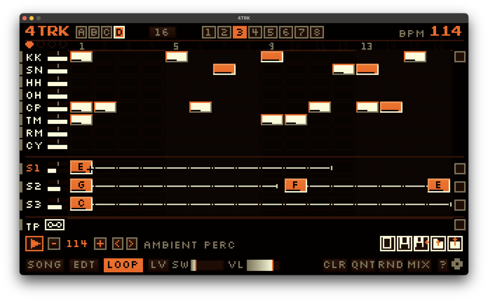
SCREENSHOTmain-screen.pngFull main screen with a drum pattern filled in, playhead visible
A retro 4-track pattern sequencer for making beats, melodies, and full songs.
4TRK.app
(first launch: right-click → Open, or System Settings → Privacy & Security → Open Anyway)4TRK.exe./4TRK
(needs PortAudio: apt install libportaudio2 / dnf install portaudio / pacman -S portaudio)
When you launch 4TRK, a short CRT boot animation plays, then you land on the main grid. This is where everything happens.

SCREENSHOTmain-screen.png8 drum tracks. Each cell is a 16th-note step. The labels are: KK (kick), SN (snare), HH (closed hihat), OH (open hihat), CP (clap), TM (tom), RM (rim), CY (cymbal).
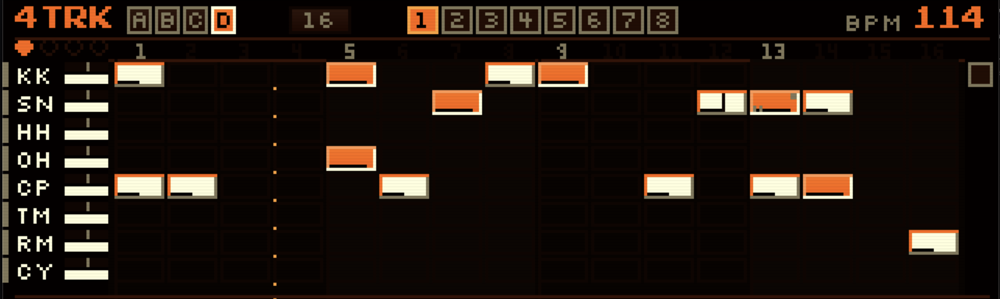
SCREENSHOTdrum-rows.png3 polyphonic synth tracks. Cells show note names when notes are placed. Click a cell to open the piano roll.
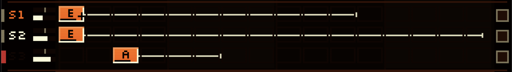
SCREENSHOTsynth-rows.pngShows a cassette icon and the waveform of recorded audio. Click to open the tape deck.
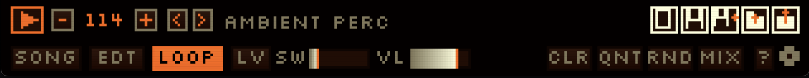
SCREENSHOTfooter-controls.png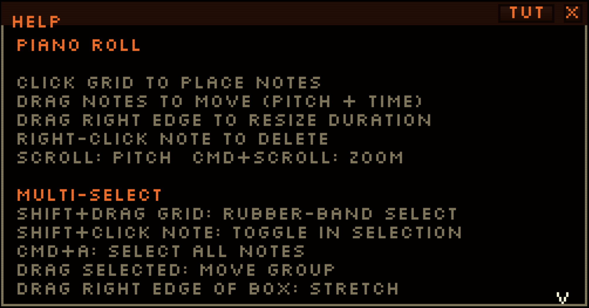
SCREENSHOThelp-overlay.pngBetween labels and the grid, each drum row has small bars:
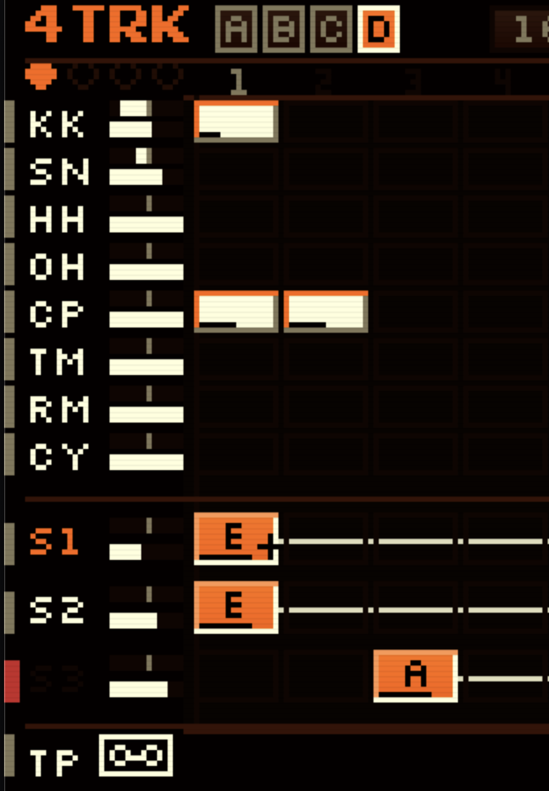
SCREENSHOTleft-edge-bars.pngLet's make a beat in under a minute.
Click cells in the KK row on beats 1, 5, 9, and 13 (the downbeats). Each click cycles through: off, soft hit, hard hit. You'll see the cells light up.
Click cells in the SN row on beats 5 and 13 (the backbeat).
Click every other cell in the HH row (1, 3, 5, 7, 9, 11, 13, 15) for 8th-note hihats. Or click every cell for a driving 16th-note pattern.
You should hear your beat looping. The playhead moves across the grid highlighting the current step.
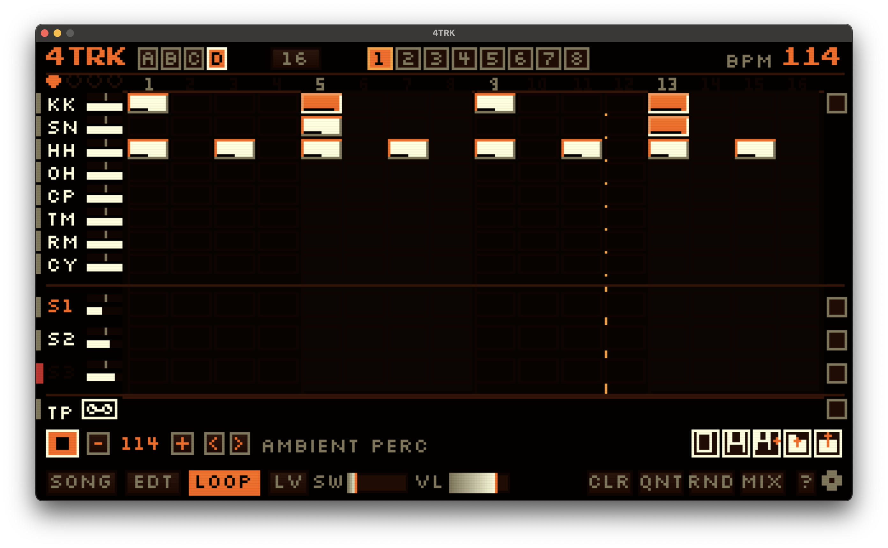
SCREENSHOTfirst-beat.pngClick the + and - buttons around the BPM number to change speed. Or click the BPM number itself repeatedly to tap tempo.
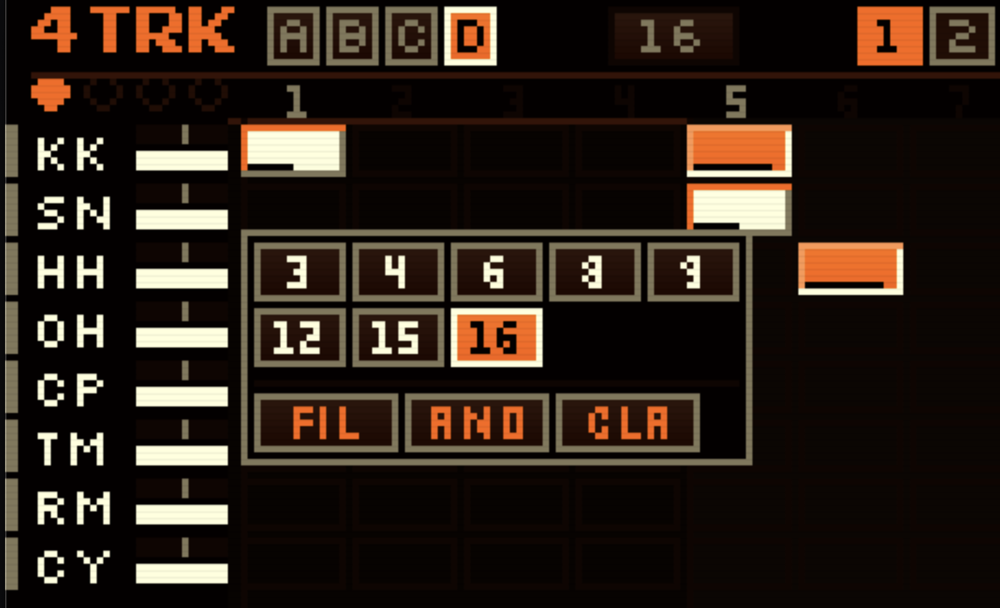
SCREENSHOTdrum-right-click.pngClick SAVE in the footer. Type a name and press Enter. Your project is saved as a tiny .4trk file.
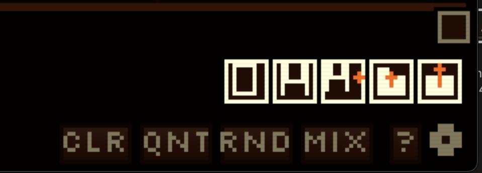
SCREENSHOTsave-buttons.pngNow let's add some notes on top of your beat.
Click any cell in the S1 row. The piano roll opens — a grid with pitch on the vertical axis and time (steps) on the horizontal axis.
Click anywhere on the grid. A note appears. The pitch is determined by the row you click, and the position by the column.
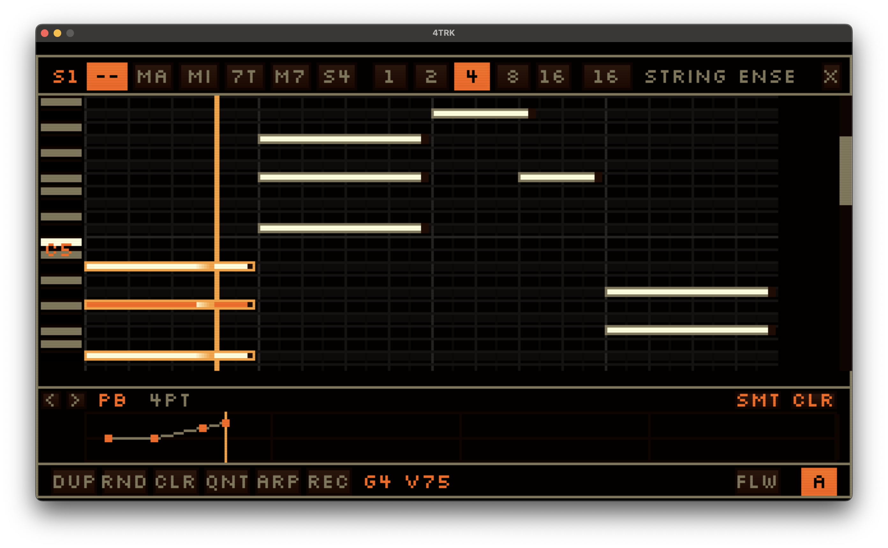
SCREENSHOTpiano-roll.pngThe toolbar has chord buttons: -- MA MI 7T M7 S4 (none, major, minor, 7th, minor 7th, sus4). Select one before clicking to place a full chord.
The toolbar also has length buttons: 1 2 4 8 16 (in steps). Select a length before placing notes.
Press Space to play. Toggle FLW in the bottom toolbar to follow the playhead.
Other toolbar buttons: DUP (duplicate first bar), RND (randomize), CLR (clear), QNT (quantize), ARP (arpeggiator), REC (record arm), AUT (per-note automation).
Press Escape to close the piano roll and return to the main grid.
Your computer keyboard doubles as a piano. This works on the main grid, in the piano roll, in the synth editor, and in the tape deck.
The layout mirrors a real piano: S and D sit between Z, X, and C just like black keys sit between white keys.
Velocity (how hard the note plays) is controlled with + / - keys.
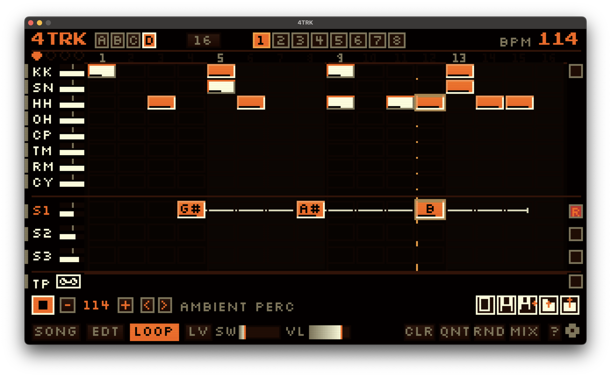
SCREENSHOTrecord-armed.pngClick a synth label (S1, S2, or S3) to open the synth editor.
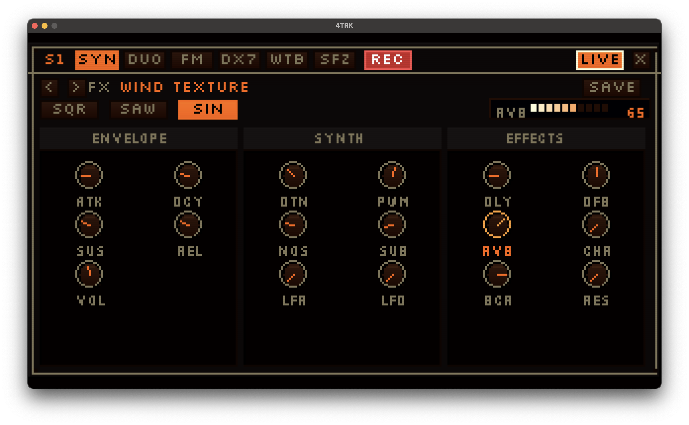
SCREENSHOTsynth-editor.pngSynth modes (press Tab to cycle):
| Mode | Name | What it does |
|---|---|---|
| SYN | Single Osc | Square/saw/sine + detune, pulse width, sub-osc, noise |
| DUO | Dual Osc | Two oscillators (A+B) with crossfade mix |
| FM | FM Synth | 2-operator FM synthesis — great for bells, basses, metallic sounds |
| WTB | Wavetable | Morphable wavetable oscillator. Drop custom .wav in ~/Documents/4TRK/wavetables/ |
| SFZ | Sampler | Load sample-based instruments from ~/Documents/4TRK/sfz/ |
Knob rows:
Working with knobs: click and drag up/down to adjust, right-click to reset to default, or use Left/Right to navigate and Up/Down to adjust.
Presets: Click < and > to browse 145+ factory presets. Hit SAVE to save your own. Browse presets from anywhere with Cmd+Left/Right.
MIDI learn: Press L, click any knob, then twist a knob on your MIDI controller. The mapping is saved automatically.
Click a drum label (KK, SN, etc.) to open the drum editor.
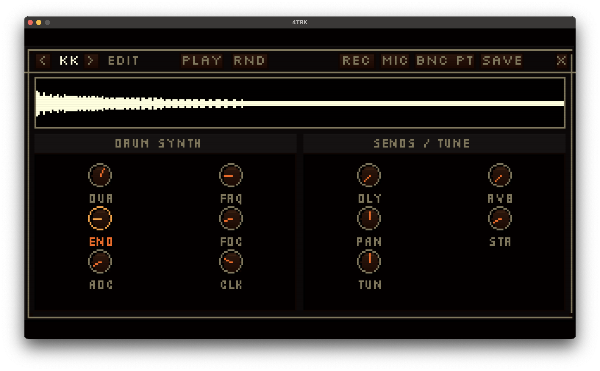
SCREENSHOTdrum-editor.pngEach drum can be sample-based or synthesized:
Shared controls: DLY, RVB, PAN, STR (stereo width), TUN (pitch). Click SAVE KIT to save your 8-drum kit.
Long-press (hold click) on any drum cell to open the per-step editor:
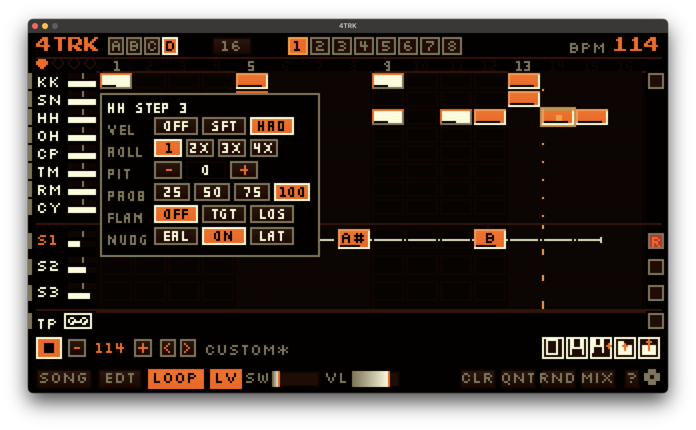
SCREENSHOTstep-fx.png| Parameter | What it does |
|---|---|
| VEL | Velocity — soft or hard hit |
| ROLL | Repeat count — 1x (normal), 2x (double), 4x (roll) |
| PIT | Pitch offset per step (semitones) |
| PROB | Probability — 25/50/75/100% chance of playing |
| FLAM | Double-hit timing — off, tight, or loose |
| NUDG | Timing offset — early, on-grid, or late |
Click the TP row to open the tape deck. It records audio and plays it back as a 4th track alongside your drums and synths. Each pattern has its own tape.
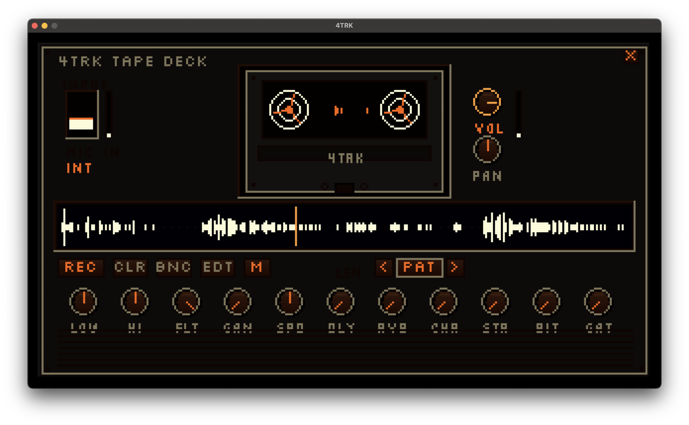
SCREENSHOTtape-deck.pngBNC (bounce): renders the full drum+synth mix to tape offline. Great for resampling or freeing up tracks.
| Knob | Effect |
|---|---|
| VOL | Tape volume |
| PAN | Stereo pan |
| LOW / HI | Low and high shelf EQ |
| FLT | Lowpass filter |
| GAN | Drive / saturation |
| SPD | Playback speed / pitch |
| DLY / RVB / CHR | Delay, reverb, chorus sends |
| STR | Stereo width |
| BIT | Bitcrush |
| GAT | Noise gate |
Click EDT to open the tape editor. Drag on the waveform to select a region, then use the operation buttons:
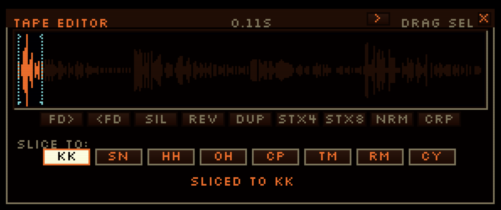
SCREENSHOTtape-slicer.pngOperations: FD> (fade in), <FD (fade out), SIL (silence), REV (reverse), DUP (duplicate), STx4 / STx8 (stutter), NRM (normalize), CRP (crop).
Slice to drum: Click a drum slot (KK, SN, etc.) below the waveform to send the selected audio to that drum — instant custom samples.
4TRK has 32 patterns in 4 banks: A, B, C, D (8 each). Each pattern stores drum hits, synth notes, tape audio, sound settings, and track lengths independently.
Click EDT in the footer to open the song arranger. Chain patterns into a full arrangement.
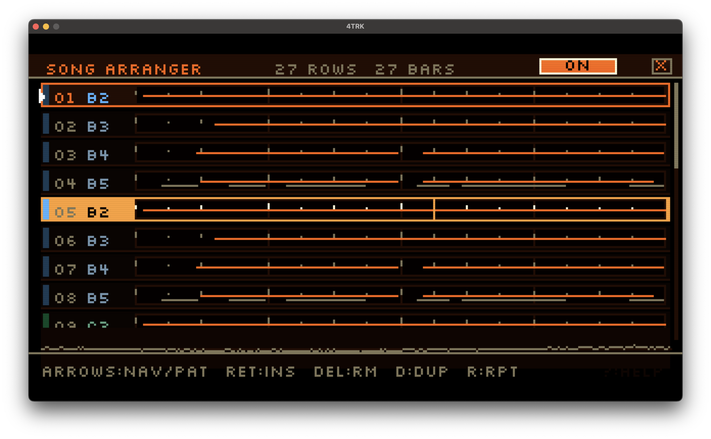
SCREENSHOTsong-arranger.png| Key | Action |
|---|---|
| Up / Down | Navigate rows |
| Left / Right | Change pattern number |
| Enter | Insert new row |
| Delete | Remove row |
| D | Duplicate row |
| R | Cycle repeat count (1–4x) |
| L | Set loop start / end |
Click SONG to enable song mode, then press Space to play through the arrangement. Enable LOOP to loop the region set with L.
Click LV for LIVE mode — synth parameters stay locked across pattern changes, perfect for performing.
Click MIX in the footer to open the mixer.
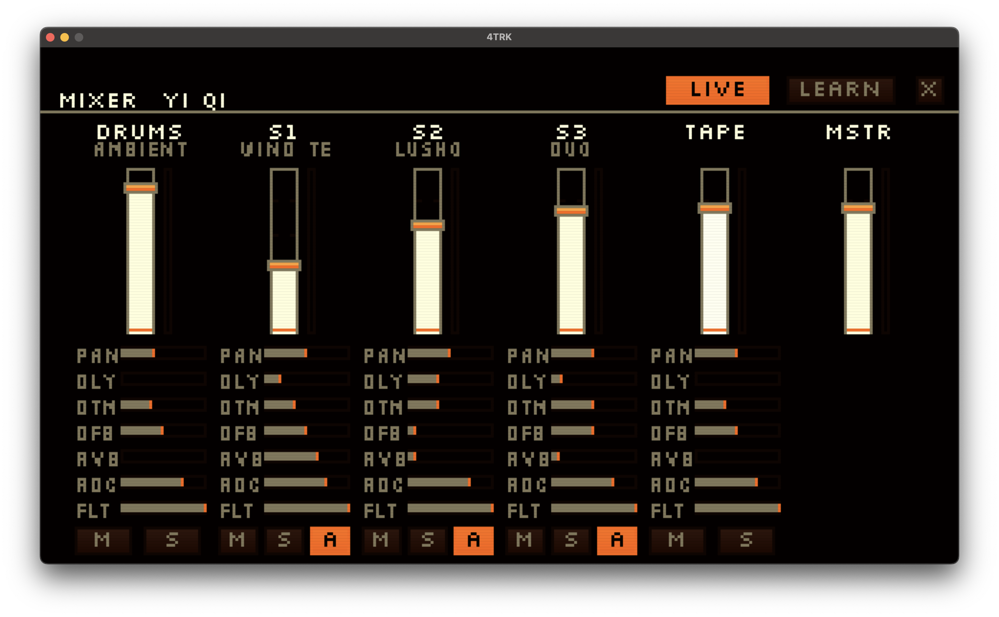
SCREENSHOTmixer.png6 channels: DRUMS, S1, S2, S3, TAPE, MSTR (master).
Each channel has: volume fader with VU meter, DLY (delay send/time/feedback), RVB (reverb send/decay), FLT (filter cutoff), M (mute), S (solo).
Click a channel label to jump to that track's editor. MSTR controls the final output.
Extending all tracks: Click the step count badge [16] in the header to cycle through 16, 32, and 64 steps. Or click LEN in the footer.
Per-track lengths (polyrhythms): Right-click a track label and choose a different length. For example: a 12-step hi-hat over a 16-step kick creates a shifting, evolving pattern that takes 48 steps to fully repeat.
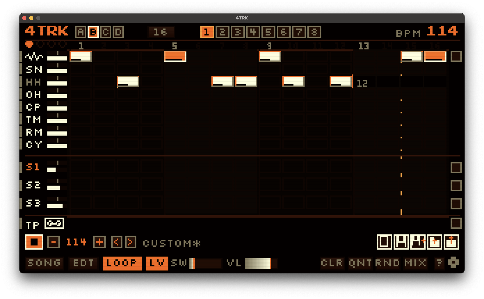
SCREENSHOTpolyrhythm.pngWhen patterns exceed 16 steps, page dots appear above the grid. Click them or press ` (backtick) to switch pages.
Open the piano roll, then click ARP in the bottom toolbar.
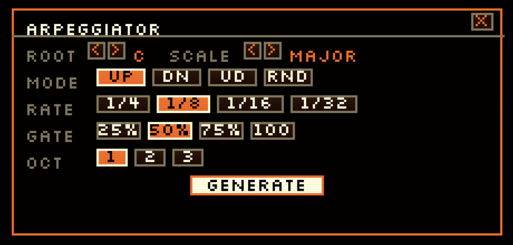
SCREENSHOTarpeggiator.png| Control | Options |
|---|---|
| Mode | UP, DN (down), UD (up-down), RND (random) |
| Rate | 1/4, 1/8, 1/16, 1/32 notes |
| Gate | 25%, 50%, 75%, 100% (note length) |
| Octaves | 1, 2, or 3 octave range |
| Scale | Major, Minor, Pentatonic, Blues, Dorian, Phrygian, Mixolydian, Harmonic Minor |
Click GENERATE to write the arpeggio pattern directly into the track.
Click RND on the main grid for drums, or in the piano roll for melodies. Drum randomization uses musical weighting; melody randomization is scale-aware with humanized velocity.
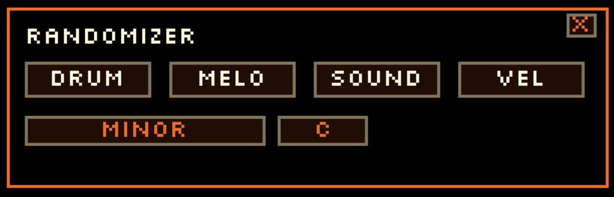
SCREENSHOTrandomizer.pngClick the EXP button (rightmost file button in the footer) to export to WAV.
The output is a 44100Hz 16-bit stereo WAV file. Type a filename and press Enter.
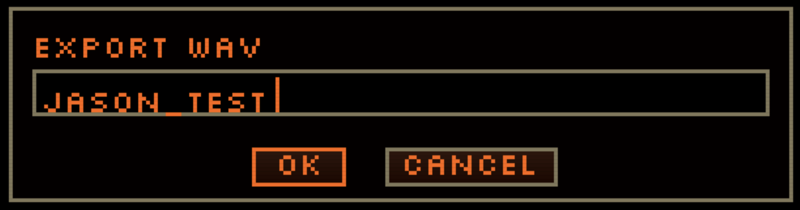
SCREENSHOTexport.pngPlug in a MIDI keyboard or controller — 4TRK auto-detects it. Select the device in Settings (gear icon) if you have multiple.
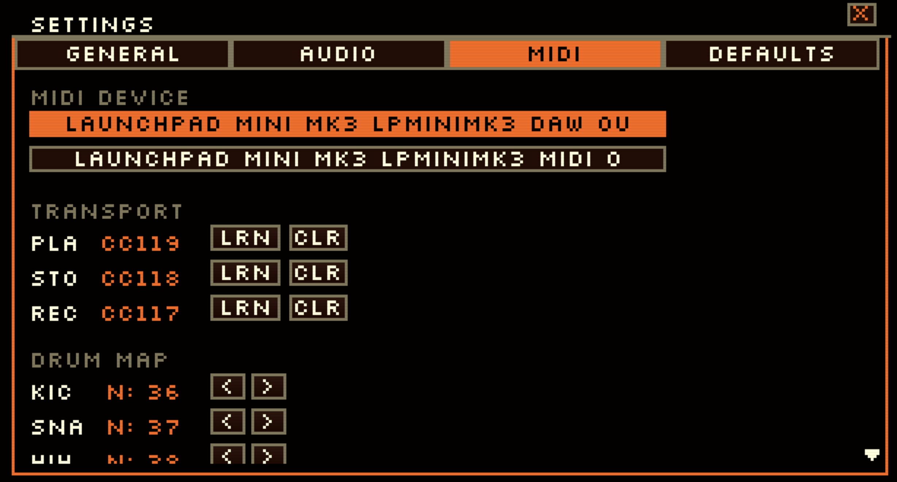
SCREENSHOTsettings-midi.png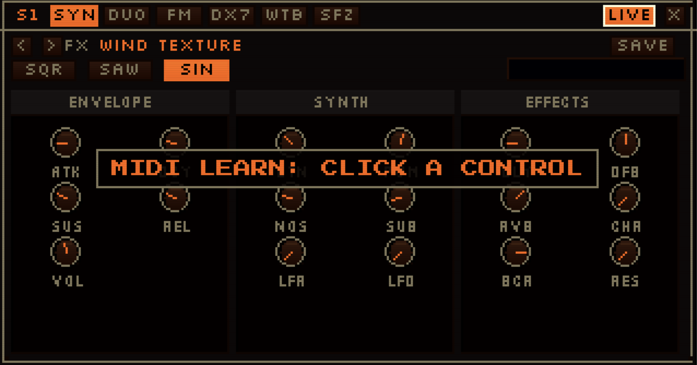
SCREENSHOTmidi-learn.pngHardware transport buttons work automatically: CC 119 (play/stop), CC 118 (stop), CC 117 (record arm).
4TRK has basic gamepad support for Xbox and PlayStation-style controllers. This is currently limited to grid navigation and basic editing — expanded gamepad controls are planned for a future update.
| Button | Main Grid | Editors |
|---|---|---|
| A | Toggle step / confirm | Confirm |
| B | Delete / back | Close popup |
| X | Hold for transpose | — |
| Y | Open editor / hold for solo-mute | Cycle synth mode |
| D-pad | Move cursor | Navigate params |
| LB / RB | Prev / next synth track | Prev / next preset |
| Start | Play / Stop | Play / Stop |
| Back | Song arranger | Hold Start: undo |
4TRK has built-in support for the Novation Launchpad Mini MK3. Plug it in and 4TRK auto-detects it — no configuration needed. The Launchpad is a companion controller; the app works fully without it.
The Launchpad provides five modes, each with its own pad layout, LED colours, and scene-column functions. Mode buttons along the top row switch between them.
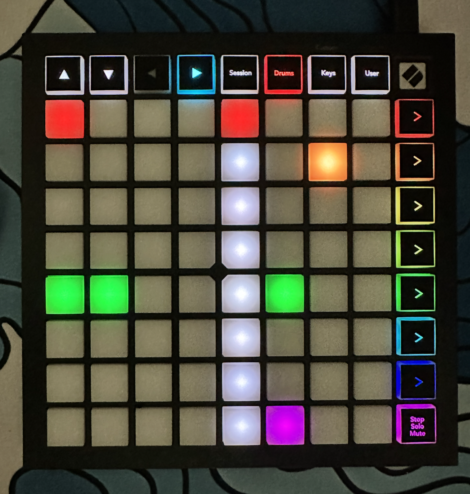
SCREENSHOTlaunchpad-drums.png| Button / Chord | Action |
|---|---|
| Tap Session | Session mode (pattern launcher) |
| Tap Drums | Drums sequencer mode |
| Tap Keys | Live Keys mode (live synth keyboard) |
| Hold User | Shift modifier |
| User + Drums | Live Drums mode (velocity-sensitive pads) |
| User + Keys | Keys sequencer mode (step-edit synth notes) |
| User + ↑ | Play / Pause |
| User + ↓ | Stop |
| User + ← | Toggle record arm |
| User + → | Toggle auto-follow (pages track the playhead) |
Step sequencer for the 8 drum sounds. The 8×8 grid shows drum rows (top to bottom: KK, SN, HH, OH, CP, TM, RM, CY) × steps within the current page.
| Control | Action |
|---|---|
| Tap pad | Cycle step: off → soft → hard → off |
| ← / → | Page through steps (for 16+ step patterns) |
| ↑ / ↓ | Previous / next pattern |
| Scene column | Toggle per-row drum mute |
| Shift + scene | Clear that drum row (all steps, params reset) |
Step sequencer for synth notes. The grid shows 8 pitches (top = highest) × 8 steps. Notes placed use the currently selected sustain length.
| Control | Action |
|---|---|
| Tap pad | Toggle a note at that step + pitch |
| ← / → | Page through steps |
| ↑ / ↓ | Cycle active synth track (S1 → S2 → S3) |
| Scene 1–6 | Sustain picker: ¼, ½, 1, 2, 4, 8 steps |
| Scene 7 / 8 | Pitch scroll down / up |
| Shift + Scene 1–3 | Clear synth track 1/2/3 events |
| Shift + Scene 4 / 5 | Preset prev / next |
| Shift + Scene 6 / 7 | Scale prev / next |
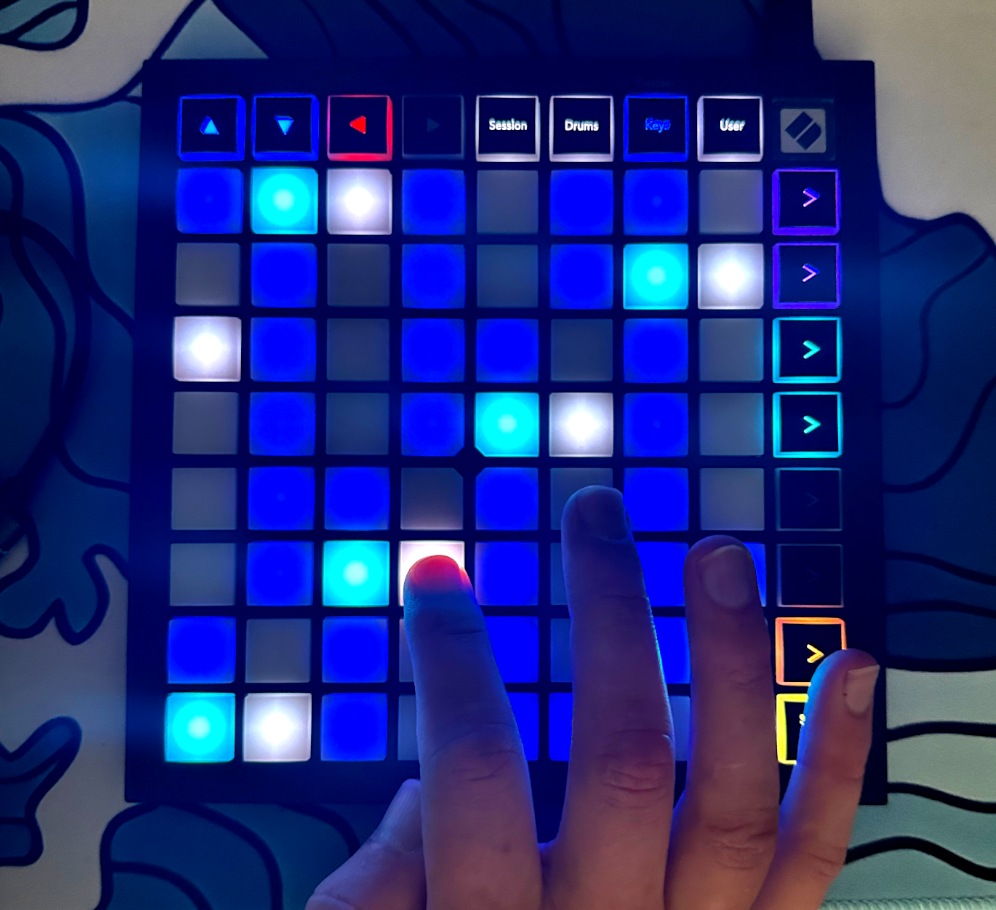
SCREENSHOTlaunchpad-live-keys.pngVelocity-sensitive isomorphic keyboard for live playing and recording. Within a row, each pad steps up by one pitch (semitone or scale degree). Each row above adds a 4th (5 semitones / 3 scale degrees) — chord shapes translate anywhere on the grid.
| Control | Action |
|---|---|
| Tap pad | Note on (velocity-sensitive); release = note off |
| ↑ / ↓ | Cycle active synth track |
| ← | Toggle record arm for the active track |
| Scene 1 / 2 | Scale prev / next |
| Scene 3 / 4 | Preset prev / next |
| Scene 7 / 8 | Pitch scroll down / up |
| Shift + Scene 1–3 | Clear synth track 1/2/3 events |
When record-armed and the sequencer is running, played notes are punched into the pattern with duration captured from press-to-release.
Velocity-sensitive drum pads for live playing, plus per-sample parameter nudge controls.
| Region | Action |
|---|---|
| Bottom-right 2×4 pads | Drum play pads (velocity-sensitive, 8 drums) |
| Top 4 rows | Per-sample param nudge: A−, A+, B−, B+ (default: A=pitch, B=volume) |
| Scene column | Toggle per-drum mute |
| ↑ / ↓ | Previous / next pattern |
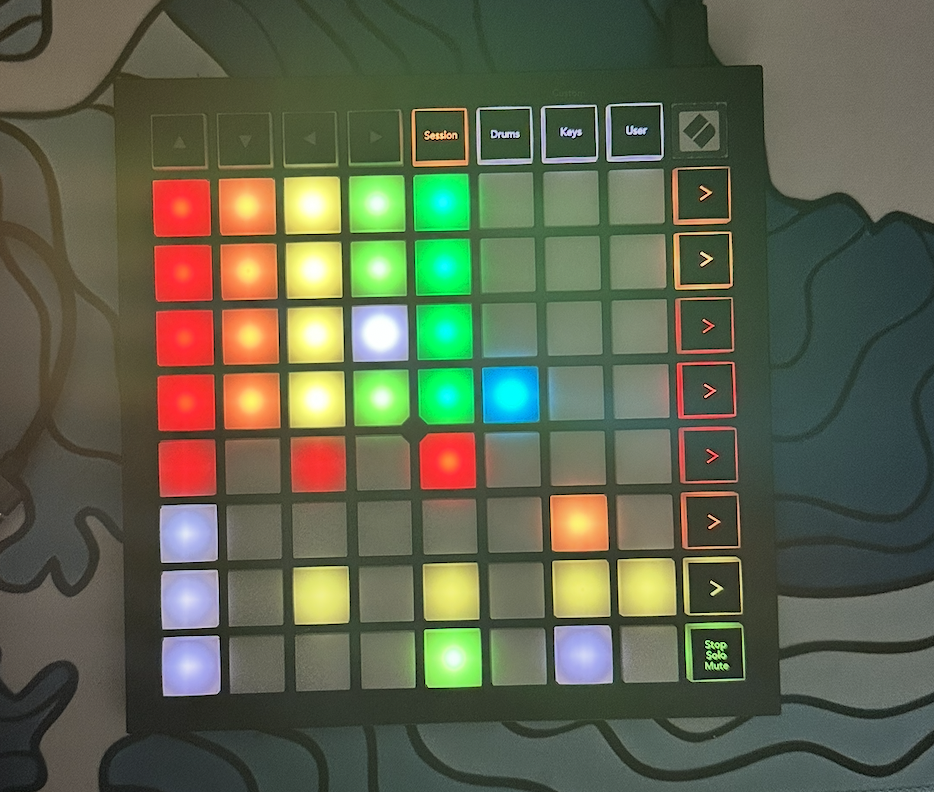
SCREENSHOTlaunchpad-session.pngPattern launcher with a live mini-view of the current pattern.
| Region | Action |
|---|---|
| Top 4 rows (32 slots) | Tap to jump to a pattern. Colour shows density; white = active |
| Bottom 4 rows | Read-only mini-view of current pattern (drum lanes or synth tracks) |
| Scene 1–4 | Beat repeat: hold to shrink loop (/8, /4, /2, /1). Release to restore |
| Shift + Scene 5 | Toggle tape record |
| Shift + Scene 6 | Toggle tape source (MIC / INT) |
| Shift + Scene 7 | Toggle tape mute |
| Shift + Scene 8 | Clear tape |
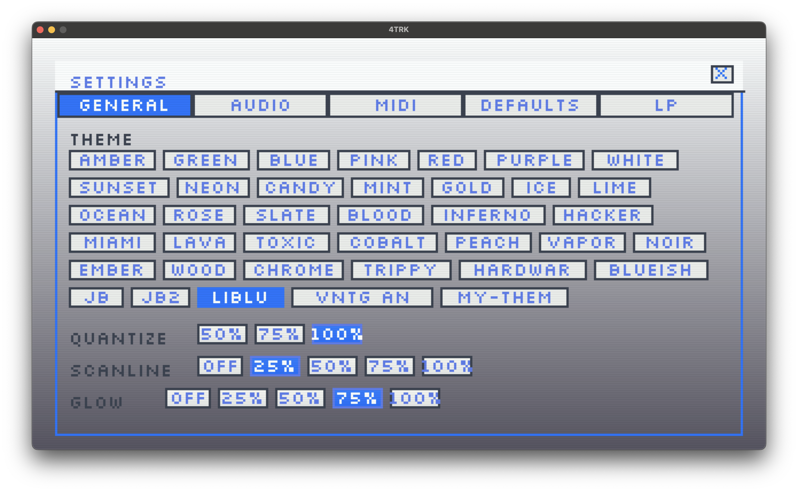
SCREENSHOTthemes.png| Key | Action |
|---|---|
| Space | Play / Stop |
| Cmd+Z | Undo |
| Cmd+C | Copy current pattern |
| Cmd+V | Paste pattern |
| Cmd+Left/Right | Previous / next preset |
| 1 / 2 / 3 | Arm synth track 1/2/3 for recording |
| 4 | Record to tape (internal) |
| 5 | Record to tape (microphone) |
| 0 | Mute / unmute tape track |
| L | Toggle MIDI learn mode |
| Shift+T | Cycle visual theme |
| Shift+? | Open help overlay |
| F11 / Shift+F | Toggle fullscreen |
| P | Toggle preview sounds |
| Escape | Close popup / back |
| Key | Action |
|---|---|
| ↑ ↓ ← → | Move step cursor |
| Enter | Toggle drum hit / open piano roll on synth row |
| R | Cycle drum repeat (1x/2x/4x) or arm synth for recording |
| Delete | Remove note or drum hit at cursor |
| Tab | Cycle active synth track (S1 → S2 → S3) |
| ` | Cycle grid page |
| [ / ] | Change keyboard octave |
| + / - | Increase / decrease velocity |
| A | Toggle arpeggiator on active synth track |
| Shift+A | Cycle arpeggiator mode (UP/DN/UD/RND) |
| Cmd+←/→ | Shift pattern steps left/right |
| Shift+←/→ | Switch to previous/next pattern |
| Z-M / S-K | Play notes on keyboard piano |
| Key / Action | What it does |
|---|---|
| Click grid | Place note |
| Drag note | Move (pitch + time) |
| Drag right edge | Resize duration |
| Right-click note | Delete note |
| Shift+drag grid | Rubber-band select |
| Shift+click note | Toggle in selection |
| Cmd+A | Select all notes |
| D | Duplicate selection |
| Delete | Delete selected notes |
| ↑ / ↓ | Scroll view (pitch) |
| ← / → | Scroll view (time) |
| Shift+↑/↓ | Transpose semitone |
| Cmd+↑/↓ | Transpose octave |
| Shift+←/→ | Nudge note position |
| Cmd+scroll | Zoom in / out |
| + / - | Adjust velocity |
| [ / ] | Change keyboard octave |
| R | Toggle record arm |
| Key | Action |
|---|---|
| ← / → | Navigate knobs |
| ↑ / ↓ | Adjust focused knob |
| Tab | Cycle synth mode (SYN/DUO/FM/WTB/SFZ) |
| R | Toggle record arm |
| [ / ] | Change keyboard octave |
| Z-M / S-K | Play notes on keyboard |
| L | MIDI learn (click knob, twist CC) |
| Key | Action |
|---|---|
| ↑ / ↓ | Navigate parameters |
| ← / → | Adjust focused parameter |
| Space | Preview drum sound |
| Key | Action |
|---|---|
| ← / → | Navigate knobs |
| ↑ / ↓ | Adjust focused knob |
| Z-M / S-K | Play notes on keyboard |
| Key | Action |
|---|---|
| ↑ / ↓ | Navigate rows |
| ← / → | Change pattern number |
| Enter | Insert new row |
| Delete | Remove row |
| D | Duplicate row |
| R | Cycle repeat count (1–4x) |
| L | Set loop start / end |
| P | Play from cursor |
| Space | Play / Stop |
| Action | What it does |
|---|---|
| Click drum cell | Cycle: off → soft → hard |
| Long-press drum cell | Open per-step FX editor |
| Right-click drum cell | Remove hit |
| Click synth cell | Open piano roll |
| Right-click synth cell | Delete events at step |
| Click track label | Open sound editor |
| Right-click track label | Track tools / set length |
| Click mute bar | Toggle mute |
| Shift+click mute bar | Toggle solo |
| Drag knob up/down | Adjust parameter |
| Right-click knob | Reset to default |
| Scroll wheel (piano roll) | Scroll pitch |
| Cmd+scroll (piano roll) | Zoom |
| Button | Main Grid | Editors |
|---|---|---|
| A | Toggle step | Confirm |
| B | Delete / back | Close |
| X | Hold: transpose | — |
| Y | Open editor | Cycle mode |
| D-pad | Move cursor | Navigate |
| LB / RB | Prev / next track | Prev / next preset |
| Start | Play / Stop | Play / Stop |
| Back | Song arranger | Hold Start: undo |
Crackling or glitchy audio usually means the audio buffer is too small for your system to keep up. This is most common on Linux (PulseAudio / PipeWire) but can happen on any platform under heavy CPU load.
Fix: Open Settings (gear icon) → Audio tab → increase the Buffer size. Start with 512; if crackling persists, try 1024. Larger buffers add a small amount of latency but eliminate dropouts.
| Buffer Size | Latency | Best For |
|---|---|---|
| 128 | ~3 ms | Fast machines, macOS CoreAudio |
| 256 (default) | ~6 ms | Most macOS / Windows setups |
| 512 | ~12 ms | Linux, older machines, or heavy projects |
| 1024 | ~23 ms | Fallback for persistent issues |
audio group).libportaudio2 package (or equivalent for your distro).libsdl2-dev if you see import errors.| Term | Meaning |
|---|---|
| Pattern | A loop of up to 64 steps containing drum hits, synth notes, and tape audio |
| Step | One 16th-note time division in the sequencer |
| Bank | A group of 8 patterns (A, B, C, D = 32 total) |
| ADSR | Attack, Decay, Sustain, Release — the shape of a sound over time |
| FM Synthesis | Frequency Modulation — one oscillator modulates another for complex timbres |
| Wavetable | A set of single-cycle waveforms that can be morphed between |
| SFZ | A sample-based instrument format (folder of .wav files + .sfz definition) |
| Polyrhythm | Different tracks running at different lengths, creating shifting patterns |
| Swing | Delays every other step slightly for a shuffle/groove feel |
| Quantize | Snap recorded notes to the nearest grid position |
| Bounce | Render audio offline (e.g., mix to tape, export to WAV) |
| Slice | Cut a section of tape audio and assign it to a drum slot |
| MIDI CC | MIDI Control Change — a knob/fader message from a hardware controller |
| MIDI Learn | Map a physical MIDI CC to a software parameter by example |
| LIVE mode | Synth parameters persist when switching patterns (for performance) |
| Song mode | Play patterns in sequence as defined in the song arranger |
| Arm | Enable a track for live recording (track label flashes red) |